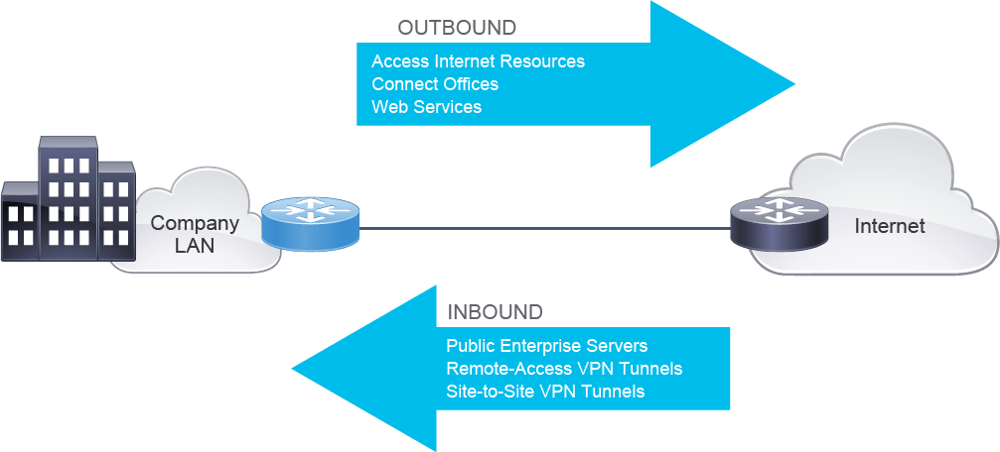
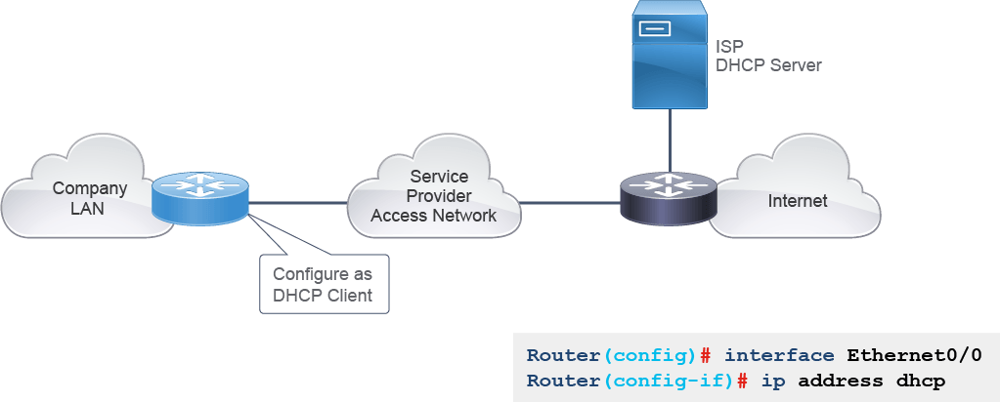

Modern enterprise IP networks are connected to the global internet and use it for some of their data communication needs. Enterprises provide many services to customers and business partners via the internet. Whether accessing resources in a cloud, connecting regional offices, or sharing web services with your customers, you must consider the options available to you. You should also understand how your company plans to use its internet connection.
The internet connection is established via an ISP. At the enterprise site, the router is the device used to connect to the ISP.

The figure illustrates enterprise internet connectivity requirements. Based on the direction of internet traffic, the connectivity requirements can be classified as outbound and inbound. For successful communication, an enterprise must ensure adequate resources for both outbound and inbound traffic.
The ISP can provide internet connectivity by providing statically assigned IPv4 addresses, or dynamically allocate them with DHCP. Depending on the option that is used, you must configure the internet-facing interfaces accordingly.
Statically assigned IPv4 addresses are useful in cases where a company or organization wants to have its servers or services publicly accessible. These static addresses can be linked to a domain name, such as http://www.cisco.com, which allows clients to find and access these servers and services.
Configuring a static provider-assigned IPv4 address is a two-step process. The first step of the process is to assign a static IPv4 address on the internet-facing interface of the router. The second step is to configure a default route that will forward all traffic that is intended for the internet to the ISP. The ISP must provide you with a static IPv4 address that you can configure on the interface.
When dynamic assignment is used by the ISP, no manual assignment of addresses is needed. Instead, the router interface needs to be configured as a DHCP client. Other configuration parameters can also be obtained through DHCP, such as the default gateway address.
Here are the advantages of dynamic address assignment:
- Reduced configuration time
- Reduced probability of configuration errors

The figure illustrates how to configure the router interface to obtain an IPv4 address through DHCP.
Obtaining an IPv4 address through DCHP involves configuring a DHCP client, which will request IPv4 addressing information from the DHCP server:
- The router requests IPv4 addressing information from the DHCP server.
- The router injects a static default route in its routing table based on the default gateway parameters received with the assigned IPv4 address.